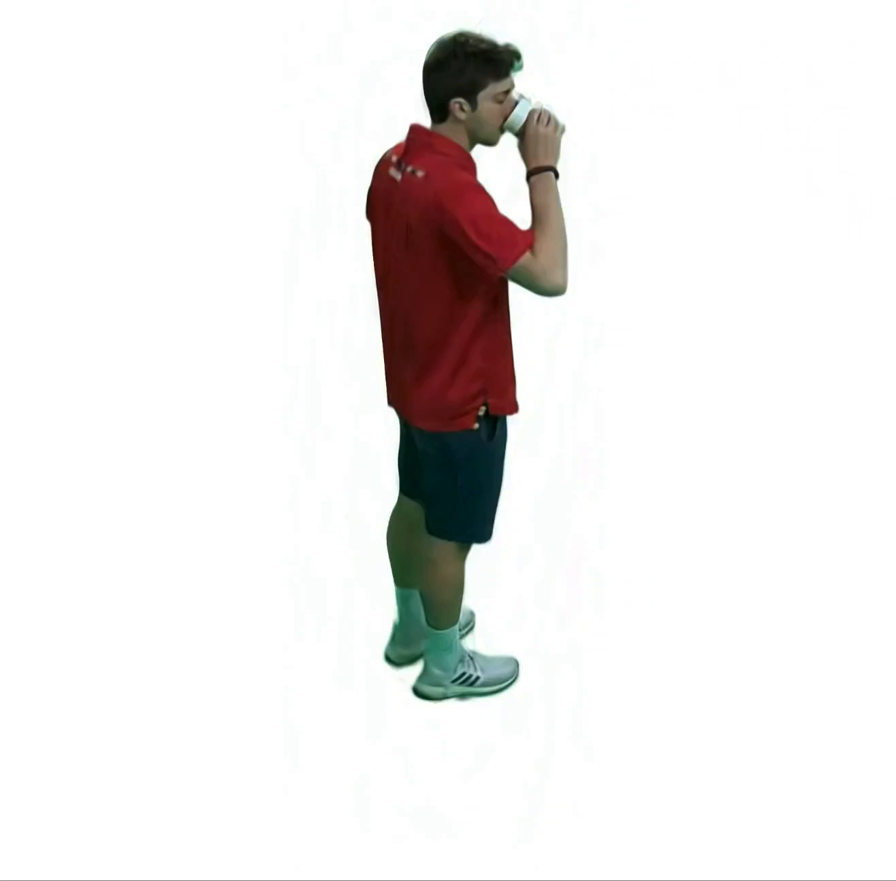
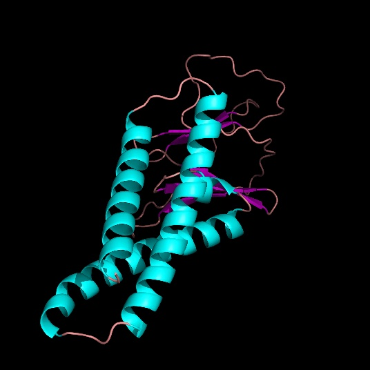
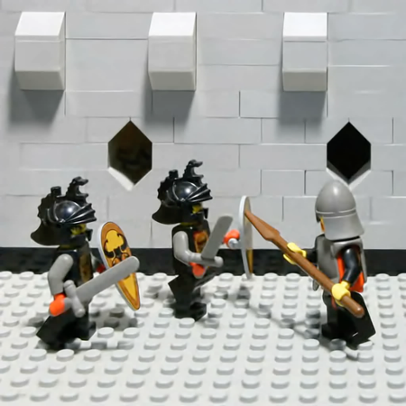
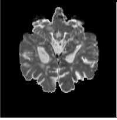

VIINTER: View Interpolation With Implicit Neural Representations of Images
View interpolation without 3D reconstruction or correspondence.

I am a Ph.D. Candidate in Computer Science at the University of Maryland advised by Prof. Amitabh Varshney. My research focus lies at the intersection of graphics, vision, and imaging. I develop machine learning algorithms for image and 3D data processing, with applications ranging from mixed reality to natural science. My goal is to enhance our ability to represent and perceive information about our world, facilitating new creation with positive societal impact.

View interpolation without 3D reconstruction or correspondence.

Interesting findings from evaluating AlphaFold2 on protein-protein docking, highlighting areas for future development using deep learning methods.

Training GAN only on blurry images from a single scene to recover a sharp image without estimating the blur kernels or acquiring a large labelled dataset.

Remarkable compression rates by representing light fields as neural network weights. Simple and compact formulation also supports angular interpolation to generate novel viewpoints.
Visualizing "who's looking at who" from static profile images as people always turn off their videos. Synthesized eye gazes are obtained by leveraging a general-purpose neural network.

Training neural networks for 360° monocular depth and normal estimation. Proposed a novel approach of combining depth and normal as a double quaternion during loss computation.

Neural networks with multimodal input disproportionately rely on certain modality while ignoring the rest. Developed a new strategy to overcome such bias and adapt to missing modalities.